中文
中文基本使用
进行完前面的 配置系统 后，我们已经成功登录到板子然后可以使用命令行来操作板子了。
扩容系统
使用不含有 MaxiPy3 的系统镜像启动后会会自动扩容，可以跳过 扩容系统 这一步。
使用内置 MaxiPy3 的镜像系统不会自动扩充系统容量到最大值，因此需要执行一下 /usr/lib/armbian/armbian-resize-filesystem start 命令来扩容一下系统大小，会花费一下时间；执行时不要强行退出，执行完毕后会自动退回到终端
连接网络
这里我们使用 nmtui 命令来配置 wifi

点开查看图文版操作
命令行中输入 nmtui 来打开可视化 wifi 连接界面
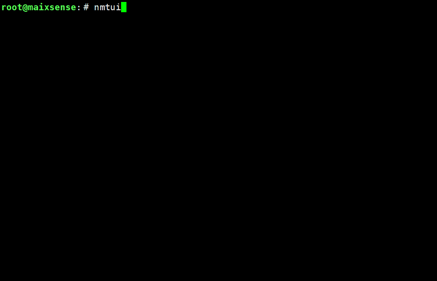 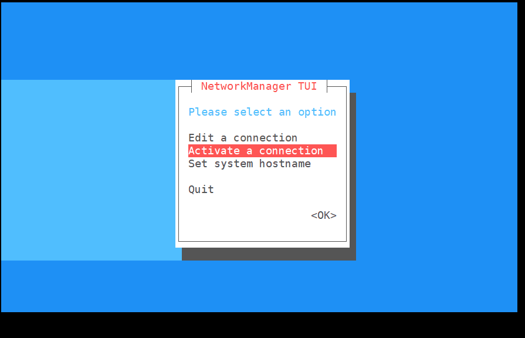如上图所示我们选择 Activate a connection 来设置连接
先择目标 wifi
 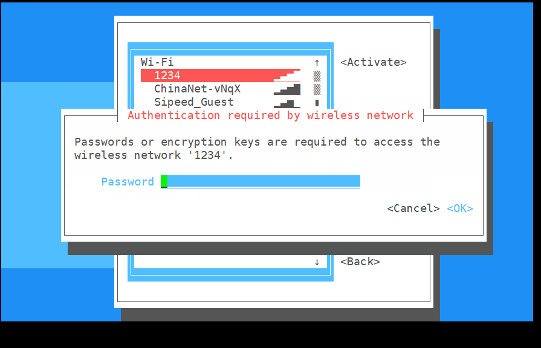
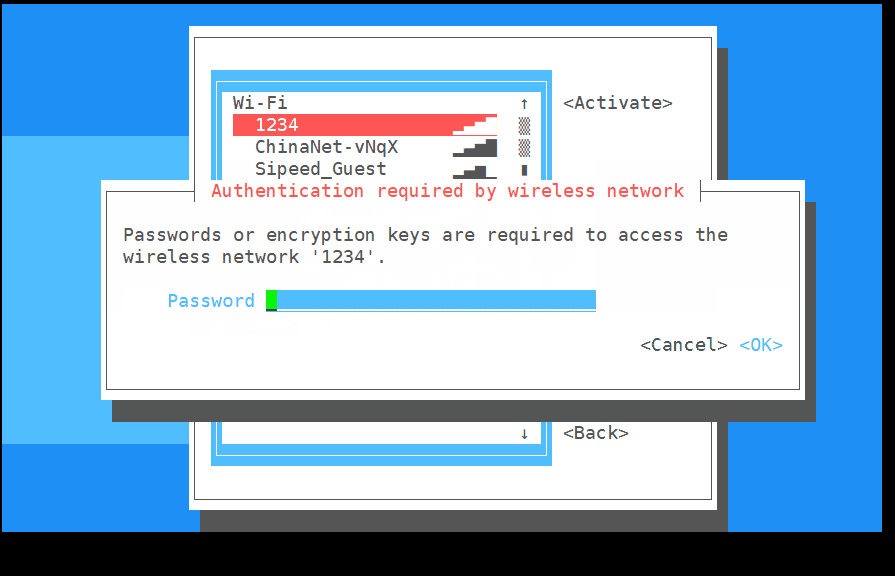
输入正确的密码
会显示 connecting
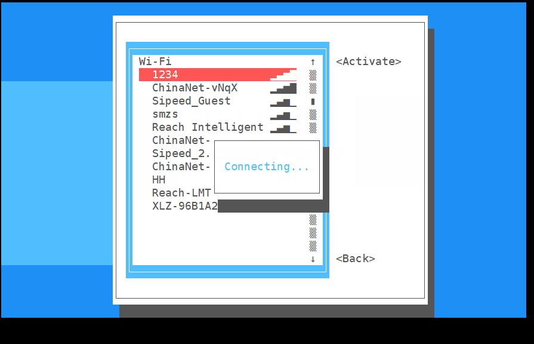成功后会发现右边的 active 变成了 Deactive，到此基本说明已经连上了 wifi
连接失败的话重新输入正确的 wifi 密码再尝试连接
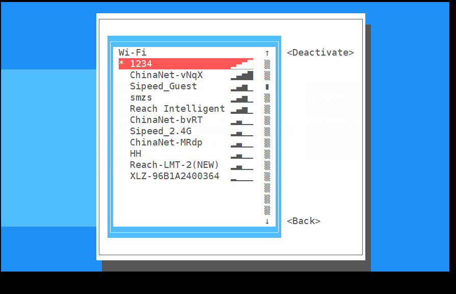然后我们重新退出回命令行终端
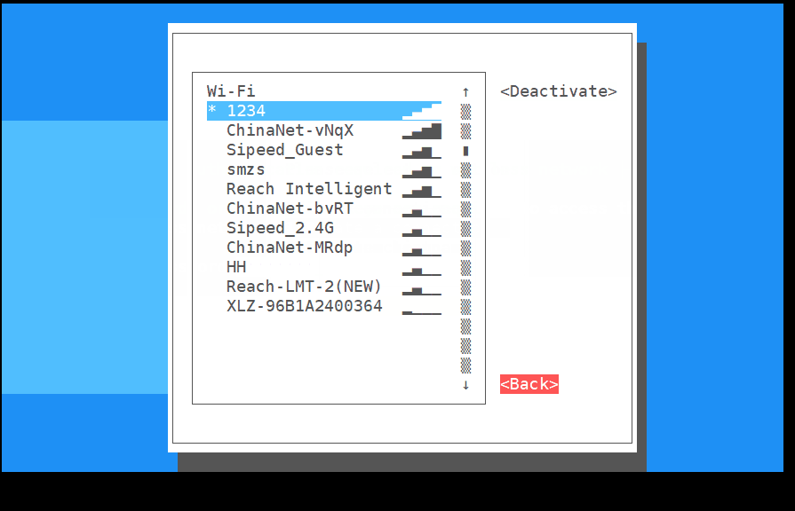 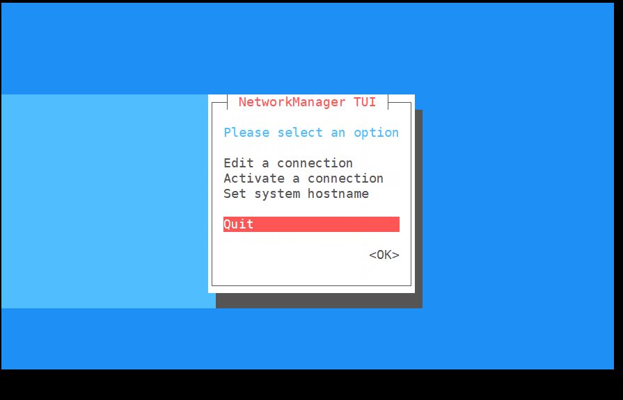
可以使用 ifconfig 命令来查看板子的 IP
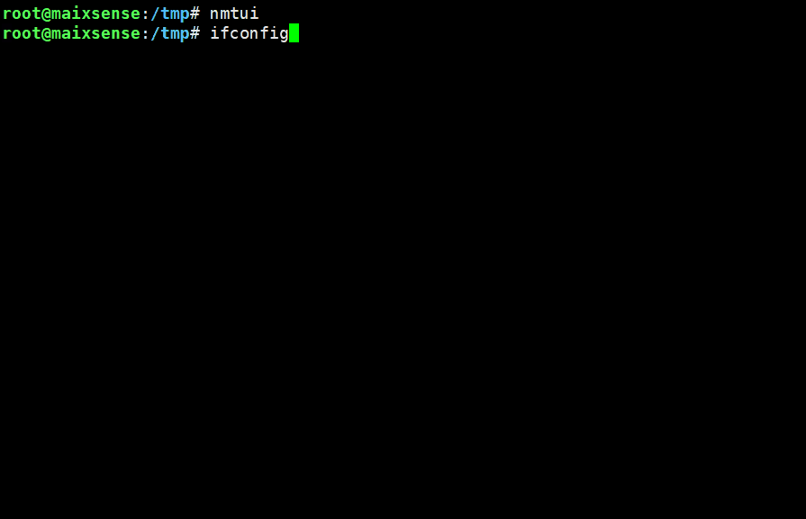 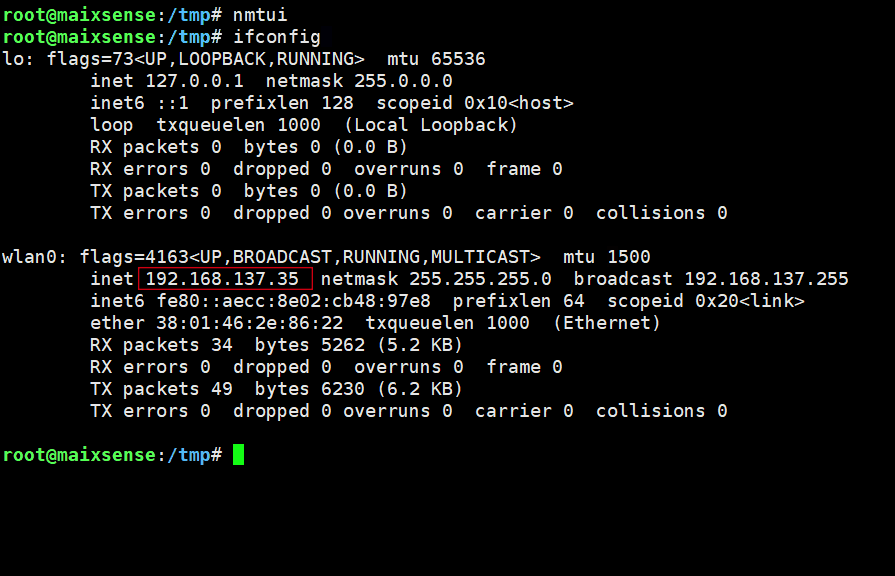到这里看到了 IP 就说明已经连接上了(上图中的红框位置)
新建用户
一般来说不建议使用 root 来登录 linux 系统，因为这样很容易把系统玩崩了。
我们来新建一个用户来进行日常使用。这里我们使用 adduser 这个命令来添加用户。
添加用户名为 xxx 的用户
adduser xxx
一些 log 显示完后会让我们设置密码：
New password:
Retype new password:
成功设置密码后所显示的 log 会包括下面的内容。
passwd: password updated successfully
接下来所有的都使用默认的即可（全部都 回车 确定就行）
Enter the new value, or press ENTER for the default
Full Name []:
Room Number []:
Work Phone []:
Home Phone []:
Other []:
Is the information correct? [Y/n]
到这里我们就已经成功创建名称为 xxx 的用户了。
使用命令 login 来登录刚刚新建的用户:
login xxx
想要退出登录的话使用命令 logout 就可以
logout
授予管理员权限
有时候新建的用户需要使用到管理员权限来执行一些操作，下面内容就是授予用户管理员权限。
这里我们编辑 /etc 目录下的 sudoers 文件就可以修改相关权限。
sudo nano /etc/sudoers
在文件里找到下面的内容
# User privilege specification
root ALL=(ALL:ALL) ALL
在里面添加上 xxx ALL=(ALL:ALL) ALL（其中xxx是你之前添加的用户名）
# User privilege specification
root ALL=(ALL:ALL) ALL
xxx ALL=(ALL:ALL) ALL
接着保存后退出即可。
安装应用
这里我们使用安装 armbian-config 为例。直接执行下面的命令即可
sudo apt install armbian-config -y
上面的命令的意思是使用 root 权限来运行 apt 应用的 install 命令来安装 armbian-config 且后面所有需要选择的内容均为 yes 选项
设置时区
命令行中输入 armbian-config，选中 Personal，再选择 Timezone -> Asia ->Shanghai 设置上海时间（Debian中没有北京时间），按住 TAB 键切换到 ok 后，保存即可。
在 armbian-config 设置界面中一直按键盘上的 Esc 键也能有退出的效果。

设置中文显示
命令行中输入armbian-config，选中Personal -> Locales，下滑到最下面（可以试着使用键盘上的 PageDown 按键加快下滑），使用键盘空格键来选中 zh.GBK 和 zh.UTF-8 ，回车确认后再选择 zh_CN.UTF8 为系统默认语言，然后多次按下 Esc 键来退回到命令行终端界面。 然后使用 reboot 命令来重启后系统后就会发现命令行终端有中文显示了。

配置蓝牙
打开 armbian-config，选中 Network，选择 BTinstall 安装蓝牙支持包。
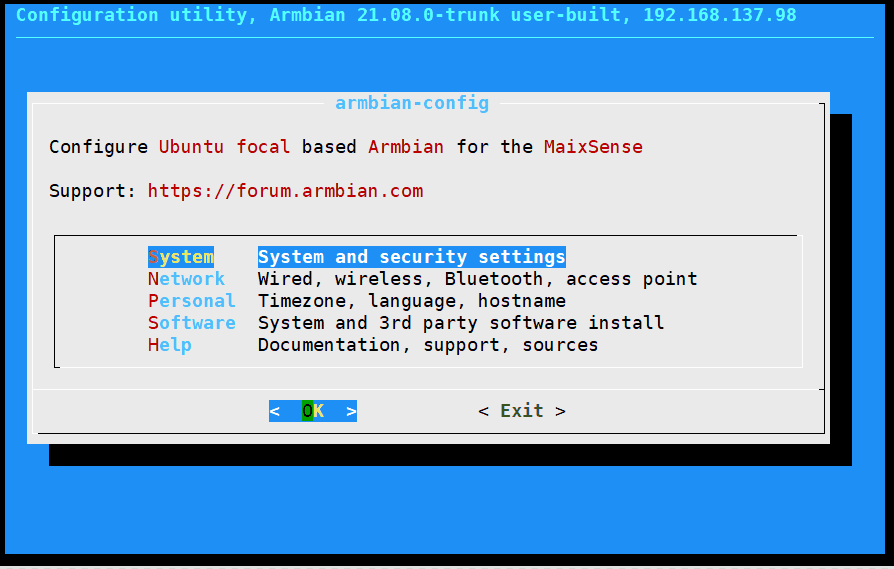
然后就可以使用 Bluetoothctl 配置蓝牙。
点开查看常用命令
devices 列出活动的蓝牙设备 paired-devices 列出已配对蓝牙设备 pairable <on/off> 是否允许配对 discoverable <on/off> 是否允许被发现 discoverable-timeout [value]设置暴露时间 pair [dev] 配对设备 trust [dev] 信任设备 untrust [dev] 取消设备信任 remove <dev> 移除设备 connect <dev> 连接设备 disconnect [dev] 断开设备连接 quit 退出 help 查看帮助
连接蓝牙设备
使用 bluetoothctl 连接蓝牙设备。
scan on #扫描设备
scan off #停止扫描
trust XX:XX:XX:XX #信任设备
pair XX:XX:XX:XX #配对设备
connect XX:XX:XX:XX #连接设备
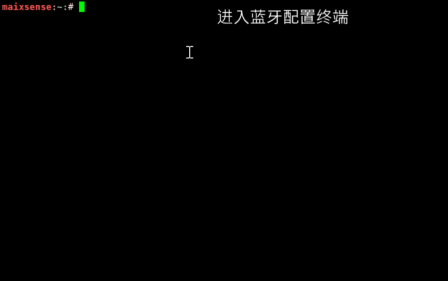
设置蓝牙音频输入/输出
启用蓝牙音频前，需要先安装 pulseaudio 和蓝牙组件
sudo apt install pulseaudio
sudo apt install pulseaudio-module-bluetooth
然后使用 pactl 命令查看是否有蓝牙输出设备
pactl list short sinks
切换音频输出到蓝牙，下面的 <dev> 在此处应该为 2
pactl set-default-sink <dev>
log 如下：
maixsense:~:# apt install pulseaudio
maixsense:~:# apt install pulseaudio-module-bluetooth
maixsense:~:# pactl list short sinks
0 alsa_output.platform-7032000.codec.stereo-fallback module-alsa-card.c s16le 2ch 44100Hz SUSPENDED
2 bluez_sink.00_26_04_00_73_B1.a2dp_sink module-bluez5-device.c s16le 2ch 44100Hz SUSPENDED
maixsense:~:# pactl set-default-sink 2

然后就可以播放音频到蓝牙设备，或者通过蓝牙连接手机当作蓝牙音箱使用。
配置音量
这里使用 alsamixer 这个应用来改变音量

点开查看常用命令
------------------- Help----------------------- xxEsc 离开 ▒x xxF1 ? H 帮助 ▒x xxF2 / 系统信息 ▒x xxF3 回放控制 ▒x xxF4 捕获控制 ▒x xxF5 所有控制 ▒x xxTab 切换显示模式 ▒x xxF6 S 选择声卡 ▒x xxL 刷新屏幕 ▒x xxLeft 移动到上一个的控制 ▒x xxRight 移动到下一个的控制 ▒x xxUp/Down 改变音量 ▒x xx+ - 改变音量 ▒x xxPage Up/Dn 大幅改变音量 ▒x xxEnd 设置音量为0 ▒x xx0-9 从0到9依次设置音量 ▒x xxQ W E 增加 左/全部/右声道音量 ▒x xxZ X C 减少 左/全部/右声道音量 ▒x xxB 左右声道平衡 ▒x xxM 切换静音 ▒x x< > 切换左/右静音 ▒x xxSpace 切换捕获 ▒x xx; ' 切换左/右捕获 ▒x -----------------------------------------------
如果需要控制蓝牙设备音量，需要使用 pactl 。
因为 pcatl 也支持控制声卡，所以建议使用这个应用来控制音量。
##查看输入/输出设备索引
pactl list short sources/sinks
##设置输入/输出音量
pactl set-source/sink-volume index volume
pactl set-default-source/sink
##设置默认输入/输出
示例，设置蓝牙耳机为输出设备，音量为10%,然后增加20%，最后减少30%
maixsense:~:# pactl list short sinks
0 alsa_output.platform-7032000.codec.stereo-fallback module-alsa-card.c s16le 2ch 44100Hz SUSPENDED
2 bluez_sink.00_26_04_00_73_B1.a2dp_sink module-bluez5-device.c s16le 2ch 44100Hz RUNNING
##蓝牙设备一般为bluez_sink
maixsense:~:# pactl set-default-sink 2
maixsense:~:# pactl set-sink-volume 2 10%
maixsense:~:# pactl set-sink-volume 2 +8192
maixsense:~:# pactl set-sink-volume 2 -0x3000
##可选 百分比，十进制数，十六进制数控制，效果相同，并且可以超过100%
媒体播放
媒体播放常用 mplayer 这个应用。
- 下载 mplayer
sudo apt install mplayer -y
安装后我们需要把想要播放的文件传到板子上。
文件可以在下载站获取到下面的示例文件
这里可以用 mobaxterm 软件来使用无线网络把文件传输到板子上。
然后执行 sudo mplayer badapple_240_60fps.mp4 -vo fbdev2 来播放视频或者 sudo mplayer Short.mp3 播放音频
mplayer badapple_240_60fps.mp4 -vo fbdev2
想要退出的话使用键盘上的 Ctrl+C 组合键来退出。
也在在命令行后面加上< /dev/null > /dev/null 2>1 &以便在后台播放
mplayer badapple_240_60fps.mp4 -vo fbdev2 < /dev/null > /dev/null 2>1 &
上面的指令是在后台播放的。想要停止的话可以先使用 fg 命令来切换到任务，再使用 Ctrl+C 来终止程序

如果没播放成功的话，尝试增加设备音量（前文提过alsamixer）或者确认一下文件路径是否正确
编写c代码
一般命令行都是用 vim 来作为编辑器。有兴趣的可以额外学习一下这款强大的编辑器
如果提示没有安装 vim 的话，可以使用命令 sudo apt install vim -y 来安装 vim。
然后我们使用 vim 来新建一个名为 helloworld.c 的源文件
vim helloworld.c
vim 有命令模式（Command mode） ， 输入模式（Insert mode） 和 底线命令模式（Last line mode）。
新建文件后默认的模式为 命令模式，此时我们按下键盘上的 i 键可进入输入模式。
将下面的代码正常输入到文件内容中。
#include <stdio.h>
int main()
{
printf("Hello, world\n");
return 0;
}
然后使用键盘上的 esc 键来退出输入模式到命令模式，
然后使用 : 来进入底线命令模式，接着输入 wq 来保存文件且退出到命令行
然后接可以在命令行中使用 gcc 来编译我们的代码了。
如果没有 gcc 的话使用 apt 命令来安装一下。
有关 gcc 的详细说明请自行搜索。
gcc hello.c -o hello.o
结束编译后直接运行即可
./hello.o
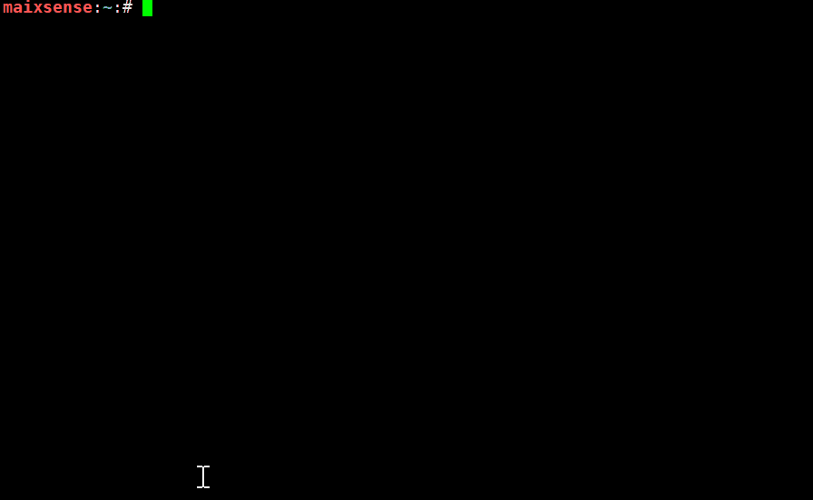
编写python代码
- 详细解释看上面的C代码样例
vim helloworld.py #新建一个python文件并且用vim打开
i
print("hello world!\n")
esc
:wq
python3 helloworld.py

使用 python 点亮第一个灯
首先安装 GPIO 的 python 支持库
pip install gpiod
把 led 正极插入 PH5,负极插入 GND
创建 led.py 文件
vim led.py
将下面代码输入到所创建的文件中
import time
import gpiod as gpio
PH_BASE = (8-1)*32 # "PH"
gpiochip1 = gpio.chip("gpiochip1")
led = gpiochip1.get_line((PH_BASE + 5)) # "PH5"
config = gpio.line_request()
config.request_type = gpio.line_request.DIRECTION_OUTPUT
led.request(config)
while led:
led.set_value(0)
time.sleep(1)
print("led on")
led.set_value(1)
time.sleep(1)
print("led off")
保存退出到命令行终端后执行代码
python3 led.py
效果如下：
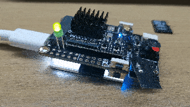
设置开机启动
需要会一些脚本语言。
首先启用开机自启动脚本，这里我们来编辑相关文件就可以修改相关设置。
vim /lib/systemd/system/rc-local.service
在最后面添加
[Install]
WantedBy=multi-user.target
Alias=rc.local.service
这样就成功启用了开机自启动脚本
接下来我们只需要把想要开机运行的内容添加到 rc.local 文件就可以了
编辑自启动脚本
vim /etc/rc.local
在exit 0前面添加需要启动的服务
echo "hello world!"
然后重启即可。
例如进行上面的修改后，此脚本会在用户登录前执行，执行示例日志如下
[ OK ] Finished Permit User Sessions.
[ 38.569457] rc.local[1322]: hello world!
要注意的是在开机脚本里面最好不要循环占用串口，这会导致我们无法再通过串口来操作板子。